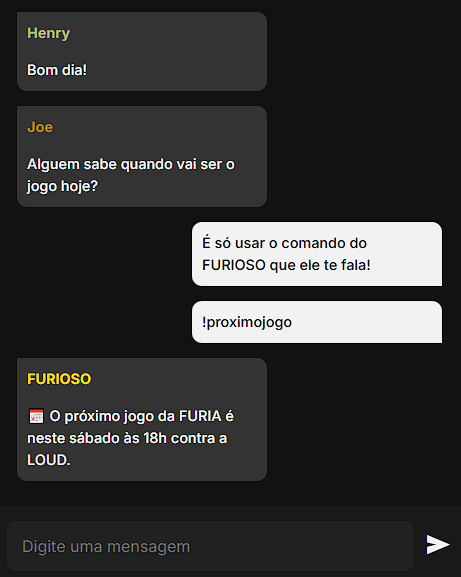

Bem-vindo ao Furia Chat - A Casa Digital da FURIA! 🔥
Você é um #FURIOSO de verdade? Então veio ao lugar certo! O Furia Chat é o ponto de encontro para torcedores da FURIA Esports. Aqui você pode:
✅ Conversar com fãs apaixonados pelo time.
✅ Perguntar em tempo real sobre jogos e elencos.
✅ Receber notícias e atualizações exclusivas.
✅ Acompanhar estatísticas dos jogos com bot especializado.

🚀 Participe já!
Junte-se à Revolução FURIA!
Não fique de fora - a emoção do esports brasileiro está aqui. Vamos juntos levar a FURIA ainda mais longe!
#GoFURIA #FuriaChat #FURIAJuntosSempre
Como funciona?
- Digite
!proximojogoe descubra o próximo evento da FURIA. - Use
!elencopara ver o time atual. - Envie
!resultadospara ver os últimos placares. - Com
!torcida, você pode ver a torcida da FURIA em ação. - Com
!mascote, você pode ver o mascote da FURIA. - Use
!historicopara saber mais sobre a história da FURIA. - Debata estratégias com outros FURIOSOS e participe!
História da FÚRIA
A Fúria Esports foi fundada em 2017 por Jaime Pádua e Cristian Biel. Ganhou destaque em CS:GO, mas também atua em Valorant, Rainbow Six e Free Fire.
Legado
A FURIA é reconhecida pelo seu jogo agressivo, torcida apaixonada e presença forte no cenário internacional.